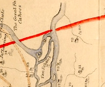

|
Lansingburgh
This exposition is intended to place Lansingburgh in its Albany context. It is NOT a definitive community history but, for our purposes, a part of the history of the city of Albany. Defined here as the land on the eastern side of the Hudson River and about eight miles north of the city of Albany. The land was granted to Albany resident Robert Sanders during the seventeenth century. In 1683, he sold it to Johannes Wendell whose heirs left it mostly dormant for the next seventy years. The land was known variously as "Steen Rabe" or "Stone Arabia." Concentrated European-style settlement on those lands dates from the period following the end of the Seven Years War. In 1763, Albany native and resident farmer Abraham Ja. Lansing purchased the land from the Wendells. He is credited with dividing his farm into lots that could be laid out into a village. Abraham Jacobse called the tract "Lansingburgh." Anticipating a grand future, for several decades local boosters also would refer to the settlement as the "New City." Following a survey of the land made in June 1771 by Yankee surveyor Joseph Blanchard, building lots were sold to both settlers and investors. A list of the owners of the original lots within it has appeared in a number of traditional sources. The owners included a number of Albany city residents. A composite of that list follows: Among those who purchased lots in 1770 and 1771 were the following: William Adams, Evert Bancker, Flores Bancker, John Barber [not 7202], Abram Blaau, Waldran Blaau, Jonathan Brewer, Abram Brinkerhoff, Peter Curtinus, John Dunbar, Benjamin French, Aldab Funda, John D. Fonda, Samuel Halstead, Anne Hamersley, Moses Holt, Isaac Lansingh, Isaac H. Lansingh, Jacob A. Lansing, Alexander McLean, Mayckie McCoy, Charles Meal, Anthony Rutgers, Eleanor Taylor, Jonathan Wickwire and Robert Yates. At the first town meeting in 1771, Ebenezer Marvin was elected moderator and Thomas S. Diamond clerk. The first committee comprised Abraham Jacob Lansingh, Isaac Bogart, John Barber, Ebenezer Marvin and Benjamin French. Abraham Wendell was chosen pathmaster, and Robert Wendell, Levinus Lansingh, and Isaac Van Arnhem were named fence viewers. In 1774, future Albany resident Maus R. Van Vranken is said to have opened a bi-lingual school there. By 1791, the village of Lansingburgh was a well-known part of newly created Rensselaer County. It was erected as a town in 1807. In 1791, future Albany resident Silvester Tiffany was publishing a newspaper in Lansingburgh called the American Spy.
Sources: Students may begin with
these traditional resources: Timeline; Landmarks
- provides a list of "original" property owners including a number of
Albany residents; Wikipedia;
LHS;
Weise
online; Rittner
online and developer's map; and the Lansingburgh Historical Society
Detail from a map of the Manor made by John R. Bleecker in 1767. It shows the northern edge of Rensselaerswyck. Across the water from where the Mohawk flows into the Hudson, the "New City" (aka village of Lansingburgh) soon would be established. Abraham Ja. Lansing's home is #78 while #80 marks the property of Robert Wendell - the name of the individual from whom Lansing had purchased the larger tract a few years earlier. first posted: 9/10/09 |